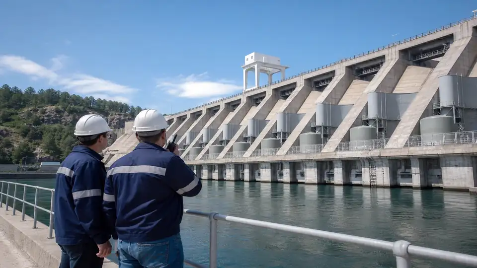
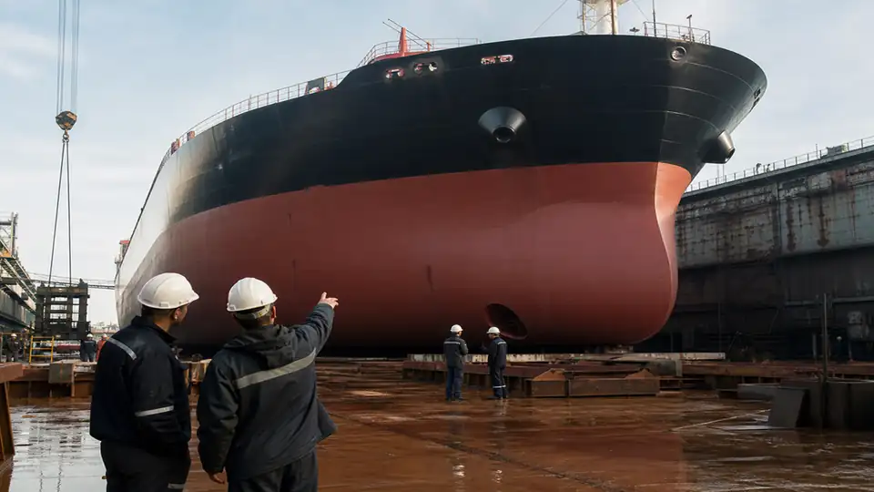

Opere
Cantieri, dighe e navale. Più imprese nello stesso posto, con accessi e fasi che si accavallano.


Settori
Cantieri, stabilimenti, porto, dighe, uffici, cucine, alberghi e magazzini. Sicura entra nell’ambiente in cui lavori.
Scrivi a SicuraCantieri, dighe e navale. Più imprese nello stesso posto, con accessi e fasi che si accavallano.
Industrie e facchinaggio. Macchine, turni, carrelli e percorsi da tenere distinti.
Alberghi, ristorazione, bar, aziende e strutture pubbliche. Chi lavora e chi entra stanno insieme.
Quattro ambienti in cui il lavoro è fisico e il cantiere, o la macchina, sta al centro.

PSC, CSE e direzione. Le fasi si sovrappongono e il coordinamento resta dentro il cantiere aperto.

Il DVR segue lo stabilimento. Ogni reparto ha i suoi rischi e le sue abilitazioni.

Spazi stretti e lavorazioni che si incrociano. L’accesso e il fuoco si controllano prima di entrare.
Accessi, viabilità interna e lavorazioni in quota. L’opera dura e le squadre si danno il cambio.
Magazzini e movimentazione. Carichi, carrelli e corsie da non mischiare.

Uffici e sedi. Meno rumore di cantiere, le stesse scadenze su persone e documenti.
Qui il rischio non è solo di chi lavora. Entra chi alloggia, mangia, beve o chiede un servizio.

Camere, impianti e turni. Ospiti e personale nello stesso edificio, a orari diversi.
Cucine e sale. Igiene, HACCP e turni nello stesso locale.
Banco e retro. Spazio corto, personale che ruota, alimenti da tenere in regola.
Scuole, uffici e presidi. Il pubblico entra. Chi ci lavora resta.
Lo racconti. Sicura dice come entra, con lo stesso incarico degli altri luoghi.